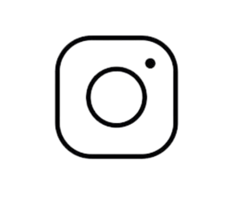

“Like numerous children encouraged to dance all over the world, I was encouraged by my grandfather to
dance since a young age of three or four and before I knew what I was doing, from then to now, dance
has become my passion and my form of self-expression through my body movements along the melody of music.
Like myself, I know there are many others like me in the world, inspired by a thing or the other to
pursue dance as a hobby or a career itself. Though, the love of dancing perseveres among many, most of us
are fearful to display the talent we acquire or the love we have for it and even if we do, we aren’t able
to display it in a larger scale whether it may be on a national or an international level, which is why
I thought of starting such a competition, to inspire those like me spread all over the world to portray
their talents not only within the limitation of their 4-walled room or a school but globally.
This started as mere midnight idea in the back of my mind, which I never thought would actually turn out
as big as it is today, without my precious team that has been working endlessly whether it be a weekend
or a work day, day or night.
Though it may seem like the creator is the one getting all the credit for
the success of everything, I want to take this moment to give credit to all the team members that have
believed in this competition and foundation even though it was just a mere idea when it previously
started because without them, the idea would still be simmering in the back of my mind with no
implementation or impact at all. Thank you to my team once again!”, says Samidha Singh Basnyat.
RRDC aims to unite talented dancers from diverse backgrounds, providing a platform to showcase their unique skills on an international stage. We believe that dance transcends cultural and geographical boundaries, and our goal is to highlight this diversity, promoting understanding and appreciation through the universal language of dance.
We are committed to making dance accessible to all. By keeping participation costs low, we ensure that talented individuals can shine regardless of their financial background. Our focus is on providing equal opportunities for everyone, breaking down economic barriers that might otherwise prevent talented dancers from pursuing their dreams.
Our competition is more than just an event—it's a movement. We are dedicated to fostering a global dance community that thrives on creativity, mutual respect, and shared passion. We believe that dance is a powerful medium for bringing people together, transcending borders and cultural differences to create a universal language of expression and unity. Our mission is to build a vibrant community where dancers can connect, collaborate, and inspire one another, pushing the boundaries of their art form.
A significant part of our commitment to this mission involves giving back to the broader community and the planet. Seventy percent of our donations from registration fees support our own foundation, the Sundar Foundation. This foundation is dedicated to addressing major global issues, with a particular focus on solid waste management and environmental sustainability. Improper waste disposal is a critical problem that affects the health of our planet and its inhabitants, leading to pollution, health hazards, and the degradation of natural ecosystems.
By channeling resources into effective waste management practices, we aim to mitigate these adverse impacts and promote a healthier, cleaner environment. The Sundar Foundation works on initiatives that educate communities about the importance of sustainable practices, support the development of innovative waste management solutions, and foster collaborations with organizations dedicated to environmental protection.
In addition to environmental efforts, the Sundar Foundation also addresses the needs of people around the world. We recognize that the well-being of our planet is intrinsically linked to the well-being of its inhabitants. Therefore, we support programs that enhance the quality of life for communities, providing access to essential resources, education, and opportunities for personal and professional growth.
By providing these resources, we aim to save our planet and ensure there is a better future for our world. Our vision extends beyond the immediate impact of our dance competition. We aspire to create a lasting legacy of positive change, empowering individuals to make a difference in their communities and inspiring collective action for the greater good.
Through the combined efforts of our dance community and the Sundar Foundation, we strive to make meaningful contributions to the global movement for sustainability and social justice. Together, we can create a future where the arts and environmental stewardship go hand in hand, fostering a world that is not only more beautiful but also more equitable and sustainable for generations to come.
Participants submit recorded dance videos, either as solo acts or in teams of up to 15 members through Whatsapp after receving emails from the official email.
The competition is structured to span several rigorous and exciting rounds, each designed to showcase the incredible talent and dedication of our participants. The journey begins with the national round, where dancers from across the country compete to represent their nation. This is followed by the continental round, where national winners face off against their counterparts from other countries within their continent. The competition culminates in the highly anticipated international round, where the best dancers from each continent vie for the ultimate title on a global stage.
Each round of the competition is evaluated based on a comprehensive set of criteria. Judges will assess dancers on their technical proficiency, including the precision and execution of their movements. They will also evaluate the dancers' expressions, looking for emotional authenticity and the ability to convey a story or mood through their performance. The overall performance quality will be scrutinized, taking into account factors such as stage presence, energy, and engagement with the audience. Additionally, the creativity and complexity of the choreography will be key components in the judging process, highlighting the innovation and artistic vision of the performers.
Judging for the national round will take place over a span of several days to ensure that each participant receives thorough and fair consideration. This extended timeframe allows judges to meticulously review performances and select the most deserving dancers to advance to the next round.
As the competition progresses to the continental and international rounds, the judging process will adapt to a live format on YouTube. This innovative approach not only brings the excitement of the competition to a broader audience but also accommodates participants from various time zones. By broadcasting the live rounds, we ensure that all dancers have an equal opportunity to showcase their talents regardless of their geographical location. The live format also adds an element of real-time engagement, allowing viewers from around the world to watch and support their favorite performers, creating a truly global dance event.
Through this meticulous and inclusive judging process, we aim to uphold the highest standards of excellence and fairness. Our goal is to provide a platform where dancers can shine, receive valuable feedback, and advance their skills and careers. By leveraging both in-person and digital platforms, we strive to create a dynamic and accessible competition that celebrates the diversity and talent of dancers from every corner of the globe.
In the final round, participants shall receive personalized feedback, enhancing their learning and growth.However, if the participants request on getting feedbacks on the continental and national round, they have to personally email rhythmrdc@gmail.com, making an additional payment of $10 to receive a personalized feedback.
Start of Registration: 6th June 2024
Early Registration deadline: 30th September 2024
Late Registration: 8th October 2024
Start of Competition: 3th October 2024
National Level Round Selection: 10th October 2024
Regional/Continental Level Round Selection: 15th October 2024
International Level Round Selection: 19th October 2024
Concluding Event and Winners Announcement: 21st October 2024
